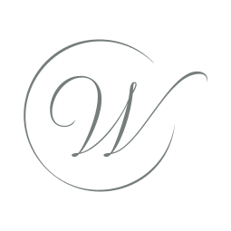
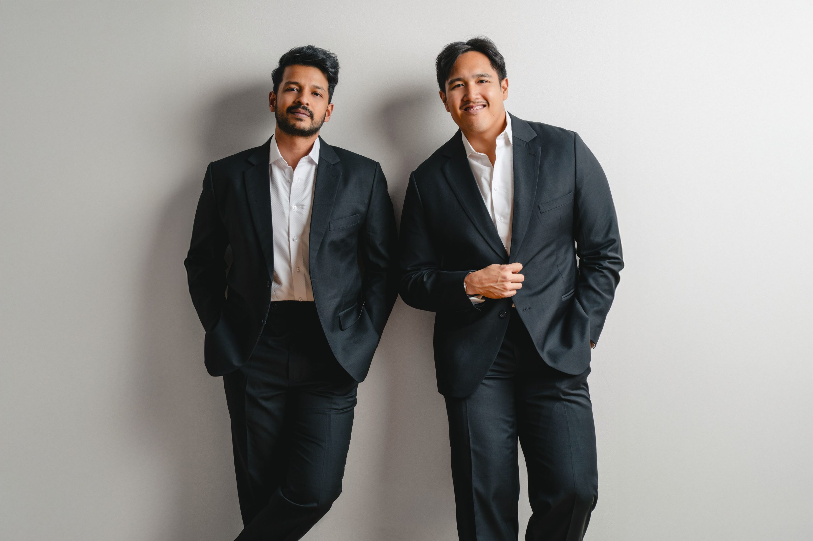

Scroll


Walking Weddings vereint Hochzeitsfilm und -fotografie zu einer einzigartigen Erzählung eures Tages. Von der intimen Zeremonie bis zur ausgelassenen Feier — wir fangen jeden Moment aus zwei Perspektiven ein, perfekt aufeinander abgestimmt, von einem Team.
Mehr Erfahren
Kiran Kothakuzhakal & Ian Pasahol
Wir sind Kiran & Ian — Freunde seit der Schulzeit, heute ein eingespieltes Duo für Hochzeitsfotografie & Film.
Unsere Verbindung prägt unsere Arbeit: Sie schafft Vertrauen, Ruhe und eine Atmosphäre, in der ihr einfach ihr selbst sein könnt. Als Hybrid-Fotografen fangen wir eure Geschichte aus zwei Perspektiven ein — in zeitlosen Bildern und bewegenden Filmen.
Über das Team


“Unter den Fotos sind wahre Kunstwerke. Wir würden Ian & Kiran ohne zu zögern jedem weiterempfehlen.”


Kundenstimmen

Bereit?
Jede Liebe ist einzigartig — erzählt uns von eurer.
Beratung Vereinbaren